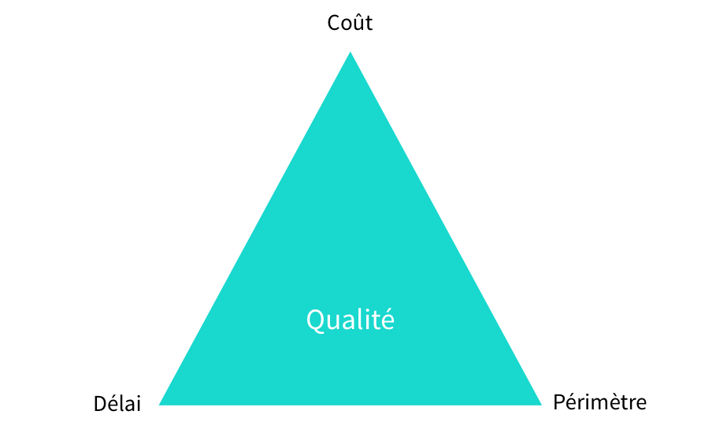

Petits livrables pour grand projet

Le triptyque Projet

Comment apprenons nous à gérer ce problème ?

Les conférences #nwxtech réunissent entre 60 et 80 participants 3 fois par an.
Quelques orateurs


17 octobre 2013 - Université de Rouen
Nous contacter/suivre :
Par email : contact@codeursenseine.com
Sur Twitter : @codeursenseine
Sur Facebook : Page Codeurs En Seine
Sur Google Plus : Communauté Codeurs En Seine